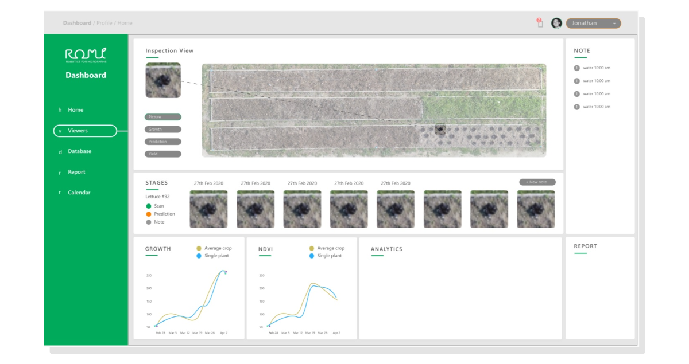

The ROMI Plant Imager performs full 3D analyses of
plants. It combines a physical scanning station that uses
an RGB camera with a powerful image processing pipeline,
the Plant Interpreter, to build a 3D representation of
plants.

The interpreter currently detects plant constituent organs
and this detailed spatial data is available for further
analysis.
The Plant Scanner is being finalized in controlled indoor
settings for a future use in research laboratories. However,
its use in controlled farming environments, such as
greenhouses, is envisioned as a mid-term application.